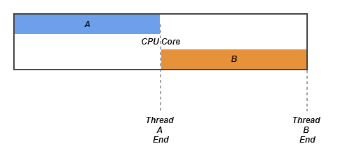
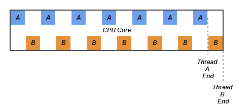

싱글스레드/멀티스레드
두 개의 작업을 하나의 스레드(th1)로 처리하는 경우와 두 개의 스레드(th1, th2)로 처리하는 경우를 가정해보면,
하나의 스레드로 두 작업을 처리하는 경우는 한 작업을 마친수 다른작업을 시작하지만 두 개의 스레드로 작업하는 경우에는 짧은 시간동안 2개의 스레드(th1, th2)가 번갈아 가면서 작업을 수행해서 동시에 두 작업이 처리되는 것과 같이 느끼게 합니다.
따라서 싱글 코어에서는 단순히 CPU만을 사용하는 계산작업이라면 오히려 멀티스레드보다는 싱글 스레드가 더 효율적입니다.
싱글스레드
멀티스레드
하나의 스레드로 두 개의 작업을 수행한 시간과 두개의 스레드로 두 개의 작업을 수행한 시간은 거의 같지만, 스레드간의 작업전환(contextn switching)에 시간이 걸리기 때문에 두 개의 스레드로 작업한 시간이 싱글스레드로 작업한 시간보다 더 걸리게 됩니다.